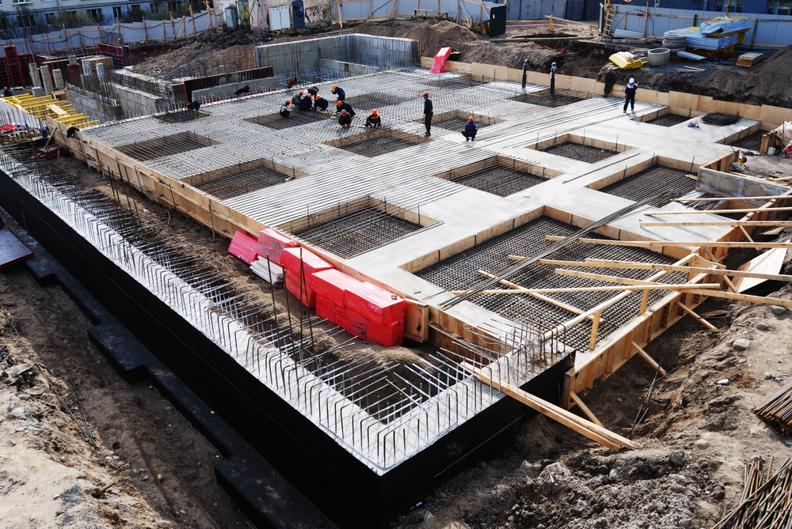
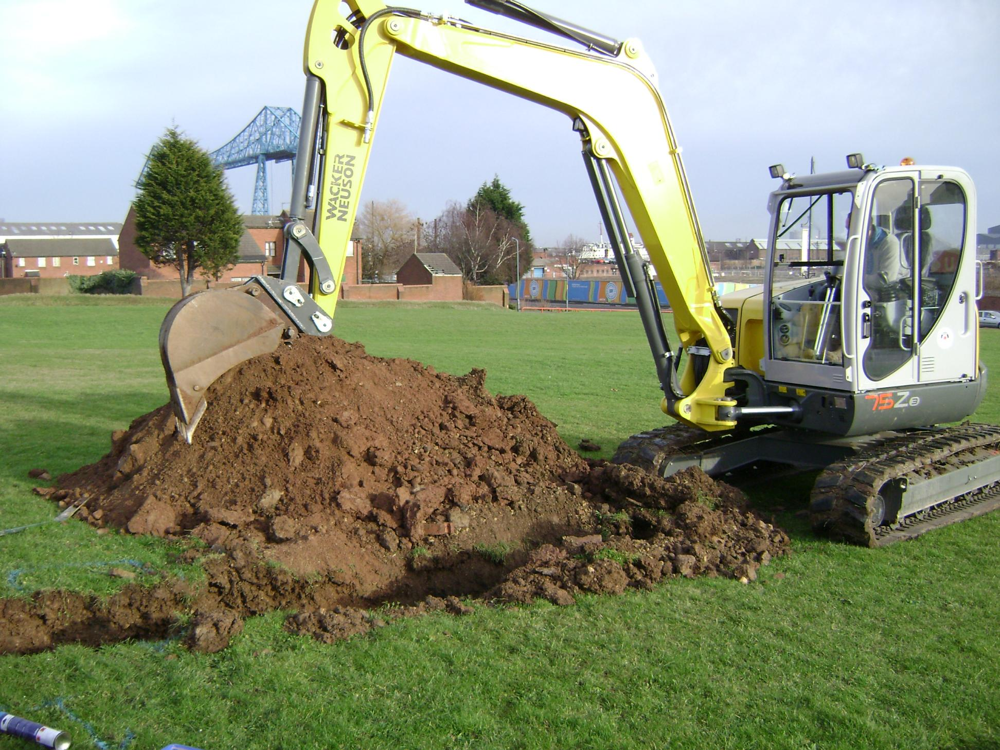
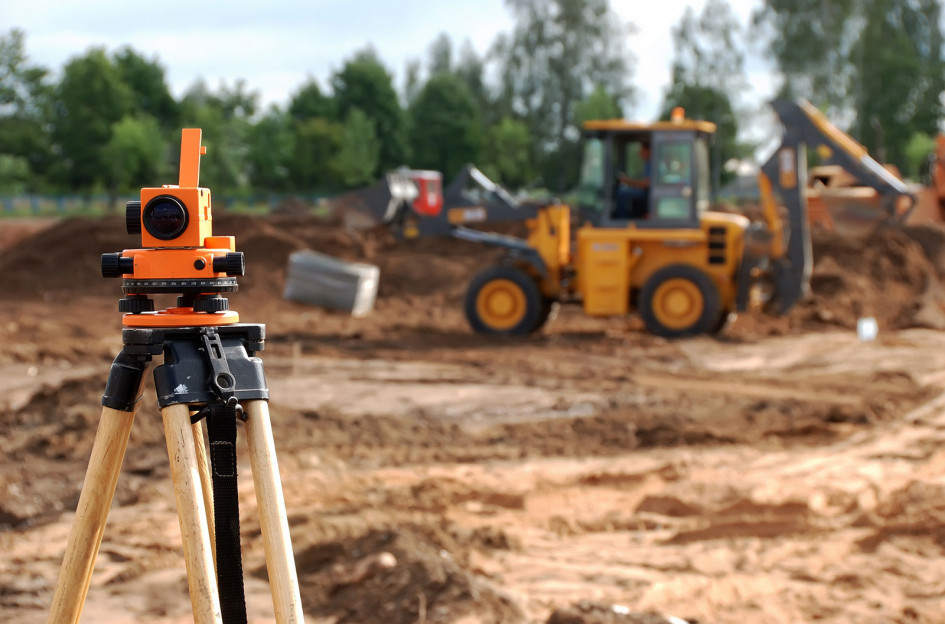
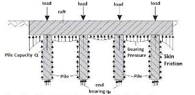

Substructure – Below Ground
The substructure of Kelham Rise is designed to ensure long-term stability, safety, and construction efficiency for the proposed high-rise mixed-use building. The substructure includes a deep Continuous Flight Auger (CFA) piled foundation system to support the steel-framed superstructure.
  
Sheffield Soil Conditions & Site Investigation
The site is located near the River Don on formerly industrial land. Based on published data and local geotechnical reports, the soil profile is expected to consist of made ground, alluvial clays, medium-dense sands, and shallow groundwater.
Technical Specifications
| Specification | Details |
|---|---|
| Soil Conditions | Made ground, alluvial clays, medium-dense sands, shallow groundwater (within 1.5–2m) |
| Piling Method | Continuous Flight Auger (CFA) piles with reinforced concrete pile cap |
| Soil Bearing Capacity | 100–150 kN/m² (estimated) |
| Pile Design | Axial and lateral loads resisted by friction and end bearing, grouped piles for uniform settlement |
| Water Control | Water ingress control near the river |
| Ground Investigation | Borehole drilling, SPT testing, laboratory soil classification, groundwater monitoring, CSL for pile quality |
Load Transfer Mechanism
Loads from the steel frame are transferred through vertical steel columns into the reinforced pile cap, and down to the CFA piles. The system uses friction and end bearing to resist axial and lateral loads.

Testing & Quality Control
Concrete cube testing, pile integrity tests, and Crosshole Sonic Logging (CSL) will ensure the integrity of the piles and compliance with design specifications.